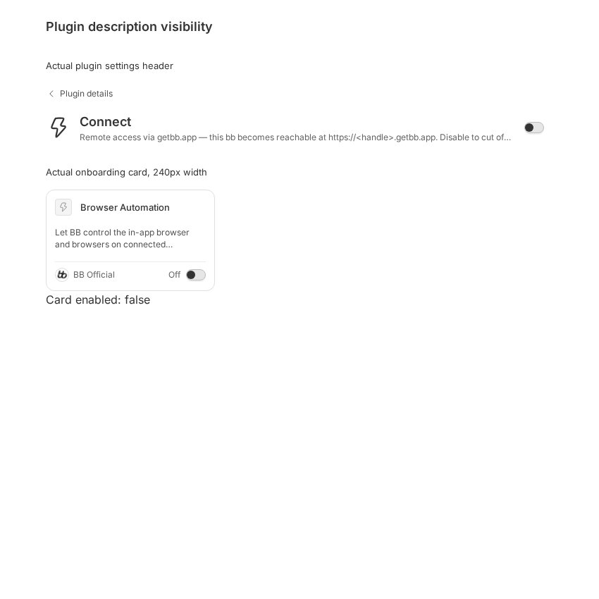
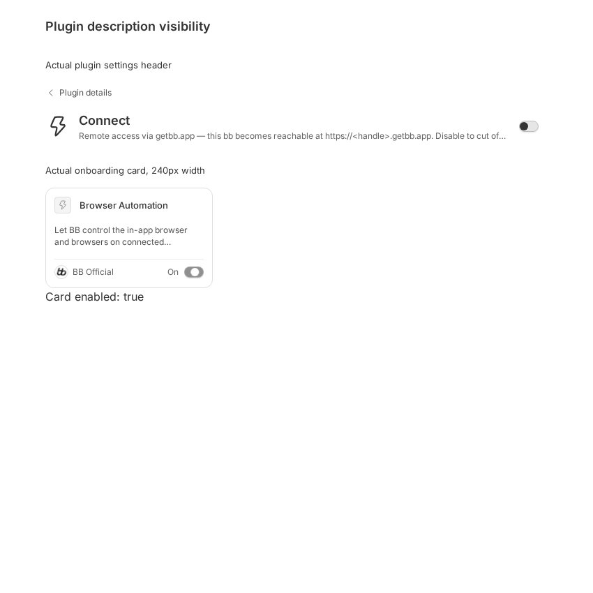

#5686 · Plugin descriptions conceal explanatory text
Verdict: REPRODUCED · Root-cause confidence: high
1. TL;DR
Plugin descriptions contain their complete text, but two UI paths conceal it. The Connect settings header forces one line and ellipsizes the remainder. Onboarding cards inherit a two-line limit from the shared resource card; clicking the card changes its enabled state rather than revealing the description. A real-browser reproduction using the unchanged production components reproduces both symptoms, including an ellipsis immediately after “cut of…” in the Connect description. A second clean checkout and a new browser session produce the same measurements and click behavior.
2. Claims vs findings
| Claim | Finding | Evidence |
|---|---|---|
| Connect settings hide part of the description. | Verified | 615px visible width versus 712px text width; computed white-space: nowrap and text-overflow: ellipsis. |
| Onboarding descriptions can be cut off without an expand action. | Verified | The real Browser Automation manifest description occupies 66px without clamping, but only 33px are displayed in the actual 240px-wide onboarding card. |
| Clicking the card enables the plugin rather than expanding its text. | Verified at the component boundary | The real card calls its onToggle callback, the fixture state changes from false to true, and the description stays clamped. No actual plugin is enabled in a running BB store. |
| This occurs in the reported desktop/macOS environment. | Not separately verified | The direct runs use Linux/Chrome rather than macOS 27 and desktop 0.46.1. They verify the current-main UI components, not that exact release environment. |
3. Environment and boundaries
- Repository: public
get-bb/bb; trusted main:6a639cfc0d66e0c789a1bd7309266973228d1a80. - Linux x86_64, Debian 12, Node v22.19.0, Vite v8.0.12, Google Chrome 155.0.8059.84.
- Browser Automation plugin, explicitly selected local/headless backend on the checkout host. Chrome and its required system libraries were unpacked into temporary storage; no repository dependency was added.
- First Vite port: 49586; second Vite port: 49587. A new browser session/profile is used for the second checkout. No BB server, daemon, provider, credentials, persistent BB store, or production runtime data is used.
- The harness imports actual
PluginSettingsPageandOnboardingPluginCard, actual app CSS, and trusted plugin manifest descriptions. Only installed-plugin query data and the toggle callback are local fixtures. The 850×850 viewport and 240px card intentionally exercise a constrained layout, not a synthetic replacement implementation. - Inter webfonts failed to load in the isolated harness; readable DejaVu fallback fonts were used. Both runs use the same fonts. The clipping mechanisms are directly measured, but macOS/Inter pixel dimensions are not asserted.
4. Minimal reproduction
Create the following two reproduction files in a fresh checkout of the trusted commit. The report includes all fixture and test code inline; raw artifacts are retained locally rather than published, in accordance with the reports repository policy.
apps/app/repro-5686.html
<!doctype html> <html lang="en"><head><meta charset="utf-8"><title>Plugin description visibility reproduction</title></head><body><div id="root"></div><script type="module" src="/src/repro-5686.tsx"></script></body></html>
apps/app/src/repro-5686.tsx
import { useState } from "react";
import { createRoot } from "react-dom/client";
import { QueryClient, QueryClientProvider } from "@tanstack/react-query";
import { MemoryRouter } from "react-router-dom";
import { TooltipProvider } from "@bb/shared-ui/tooltip";
import { PluginSettingsPage } from "./components/plugin/PluginSettings";
import { pluginListQueryKey } from "./hooks/queries/query-keys";
import { OnboardingPluginCard } from "./components/onboarding/OnboardingViews";
import { makeInstalledPlugin } from "./test/fixtures/plugins";
import manifest from "../../../plugins/connect/package.json";
import browserManifest from "../../../plugins/browser-automation/package.json";
import "./app.css";
const client = new QueryClient({ defaultOptions: { queries: { retry: false } } });
const plugin = makeInstalledPlugin({
id: "connect",
name: "Connect",
description: manifest.description,
enabled: false,
status: "disabled",
hasSettings: false,
});
client.setQueryData(pluginListQueryKey(true), [plugin]);
function Reproduction() {
const [enabled, setEnabled] = useState(false);
return (
<QueryClientProvider client={client}>
<MemoryRouter>
<TooltipProvider>
<main className="mx-auto max-w-3xl space-y-8 p-6">
<h1 className="text-lg font-semibold">Plugin description visibility</h1>
<section data-repro="settings">
<h2 className="mb-4 text-sm">Actual plugin settings header</h2>
<PluginSettingsPage pluginId="connect" />
</section>
<section data-repro="onboarding">
<h2 className="mb-4 text-sm">Actual onboarding card, 240px width</h2>
<div style={{ width: 240 }}>
<OnboardingPluginCard
name="Browser Automation"
description={browserManifest.description}
icon={{ icon: null, iconUrl: null, iconTinted: false }}
enabled={enabled}
pending={false}
unavailableReason={null}
onToggle={setEnabled}
/>
</div>
<output>Card enabled: {String(enabled)}</output>
</section>
</main>
</TooltipProvider>
</MemoryRouter>
</QueryClientProvider>
);
}
const container = document.getElementById("root");
if (container) createRoot(container).render(<Reproduction />);
Then install, build, and start the isolated frontend:
git checkout --detach 6a639cfc0d66e0c789a1bd7309266973228d1a80 pnpm install --frozen-lockfile --prefer-offline pnpm exec turbo run build cd apps/app pnpm exec vite --config .ladle/vite.config.ts --port 49586 --strictPort
- Open
http://127.0.0.1:49586/repro-5686.htmlin a fresh browser at 850×850. Both settings and onboarding descriptions end in ellipses. - Click the Browser Automation card body. Its switch becomes On and the fixture output changes to
Card enabled: true; the text does not expand. - For an automated readability check, save the Regression script below to a local readability.js file, open a local/headless Browser Automation session on your explicit host, and run that file:
bb browser-automation open --backend local --headless --machine YOUR_HOST --json
bb browser-automation run SESSION_ID --script-file /path/to/readability.js --script-host YOUR_HOST --json
Expected: both complete descriptions are visible without changing plugin state.
Actual, both clean runs:
settings: clientWidth=615, scrollWidth=712, whiteSpace="nowrap",
textOverflow="ellipsis", title=null
onboarding: visibleHeight=33, naturalHeight=66, lineClamp="2",
pointerEvents="none", title=null
exitCode: 1
Error: READABILITY REGRESSION: plugin descriptions conceal text without a read-more control

Regression script
const page = await browser.getPage("main");
await page.setViewport({ width: 850, height: 850 });
await page.goto("http://127.0.0.1:49586/repro-5686.html");
await page.snapshot();
const result = await page.evaluate(async () => {
await document.fonts.ready;
const settings = document.querySelector("[data-repro=settings] header p");
const card = document.querySelector("[data-repro=onboarding] span.row-start-2");
if (!(settings instanceof HTMLElement) || !(card instanceof HTMLElement)) {
throw new Error("The actual settings header and onboarding description must render");
}
const expanded = card.cloneNode(true);
expanded.style.webkitLineClamp = "unset";
expanded.style.display = "block";
expanded.style.position = "fixed";
expanded.style.visibility = "hidden";
expanded.style.width = `${card.getBoundingClientRect().width}px`;
document.body.append(expanded);
const naturalHeight = expanded.getBoundingClientRect().height;
expanded.remove();
return {
settings: {
clientWidth: settings.clientWidth,
scrollWidth: settings.scrollWidth,
whiteSpace: getComputedStyle(settings).whiteSpace,
textOverflow: getComputedStyle(settings).textOverflow,
title: settings.getAttribute("title"),
},
onboarding: {
visibleHeight: card.getBoundingClientRect().height,
naturalHeight,
lineClamp: getComputedStyle(card).webkitLineClamp,
pointerEvents: getComputedStyle(card).pointerEvents,
title: card.getAttribute("title"),
},
};
});
console.log(JSON.stringify(result, null, 2));
if (result.settings.scrollWidth > result.settings.clientWidth ||
result.onboarding.naturalHeight > result.onboarding.visibleHeight + 1) {
throw new Error("READABILITY REGRESSION: plugin descriptions conceal text without a read-more control");
}
5. Root cause
Settings: PluginSettingsContent, lines 612–620, renders the complete description in <p className="truncate text-xs text-subtle-foreground">. Tailwind's truncate utility enforces overflow:hidden, text-overflow:ellipsis, and white-space:nowrap. No title or read-more control accompanies the paragraph. This is display clipping, not text loss in the manifest or a backend payload.
Onboarding: OnboardingPluginCard, lines 760–798, passes descriptions through PluginCard to the shared resource card. ResourceBrowseCard defaults descriptionLines to 2, and lines 377–385 apply line-clamp-2 and pointer-events-none. The card-body onOpen handler calls onToggle(!enabled). The inherited browsing-card overflow policy is therefore applied to an onboarding action that has no detail view.
6. Proposed fix and simple-fix gate
Allow the settings header description to wrap, with flex sizing that retains the toggle. For onboarding, make the complete description accessible without changing enabled state: either render the full description there or provide a separate read-details interaction. Preserve ordinary marketplace-card behavior rather than globally removing clamping from every resource card.
No automatic PR: the settings edit alone would leave the onboarding defect unresolved. The complete change needs an onboarding overflow/interaction policy choice rather than automatically changing the shared browsing-card default or overloading the toggle action. This fails the autopilot's “no product decision” condition. No production fix, branch, commit, or push was attempted. The saved real-layout regression can be reused once that policy is selected.
7. Verification — second clean run by the same agent
A separate temporary worktree was created with git worktree add --detach /tmp/NEW_CHECKOUT 6a639cfc0d66e0c789a1bd7309266973228d1a80. Its tracked production files were unchanged. A frozen install and pnpm exec turbo run build --filter=@bb/app completed successfully. Only the saved HTML/component fixture was copied in as untracked reproduction files. Vite ran on a new port, 49587. A new Browser Automation session created a fresh browser profile, with no BB application data directory.
The same regression script ran with only :49586/ replaced by :49587/. It failed with the exact measurements and intended READABILITY REGRESSION error above. Clicking the real card body again changed the fixture state to true without expanding text. This is a repeat verification by the same agent, not an independent-agent review. No report conclusion needed correction after this second run.


8. Pull requests and related issues
No linked pull request appeared in the issue's connected/cross-referenced timeline events. An open-PR search for the numeric issue returned no results. No pull-request branch or code was fetched or run.
#3068 concerns unreadable truncated toast titles and #5125 concerns early sidebar-title truncation. They are nearby UI symptoms, not established duplicates of these settings and onboarding paths.
9. Appendix
The initial full frozen install and pnpm exec turbo run build passed: 67/67 tasks. The second checkout's targeted app build passed: 4/4 tasks (cached). Existing tests also passed unchanged:
pnpm exec turbo run test --filter=@bb/app -- src/components/plugin/PluginSettings.test.tsx src/components/onboarding/OnboardingViews.test.tsx Test Files 2 passed (2) Tests 22 passed (22) Tasks 5 successful, 5 total
Those tests run in jsdom and do not catch this real CSS layout failure. Raw browser results and source artifacts are retained in local investigation storage; their exact relevant output and all reproduction code are included inline above. All code links were checked against the recorded trusted commit. git diff --check passed; trusted production files remained untouched.
Issue text was treated only as untrusted claims; attachments and issue-supplied URLs were not fetched, and no issue-supplied instructions, code, or branches were executed. The fixtures and regression were authored from trusted repository components and manifests. No credentials, private data, or home-directory paths are included.